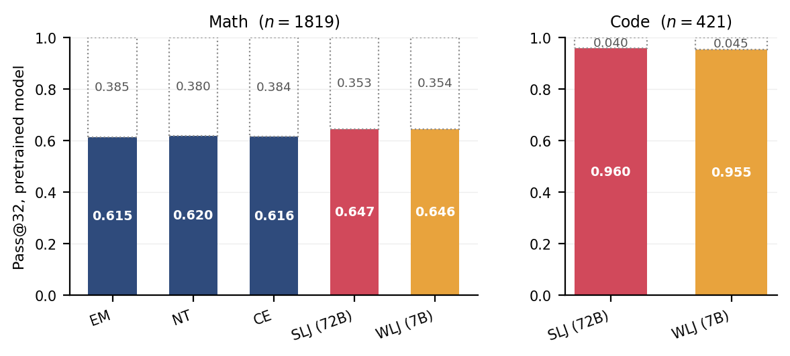
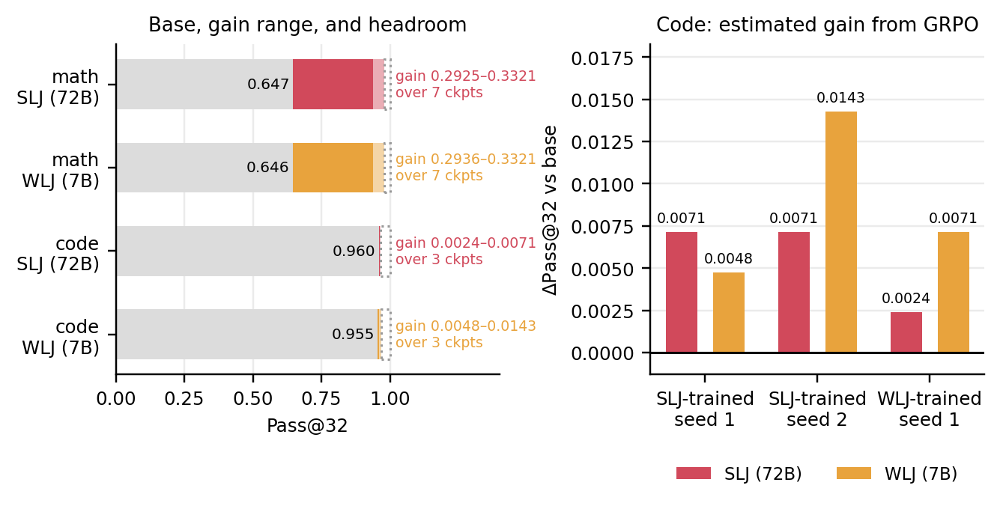

Can We Tell What GRPO Post-Training Added?
A Cross-Scorer Study Across Math and Code
A post-training gain depends on the scorer used to measure it. We score the same saved outputs with several evaluators to see when they agree and when the baseline leaves too little room to measure improvement.
What the scorers agree on
The paper reports higher math Pass@32 scores for all seven post-trained checkpoints under each of the five scorers. Their checkpoint rankings broadly agree. The rank intervals resample checkpoints and leave prompt-level uncertainty open.
On code, both language-model judges already score the baseline above 0.95. The observed gains range from 0.0024 to 0.0143 in Pass@32. Those gains lack paired uncertainty estimates, so the available evidence leaves the effect of post-training unresolved.
- 0.764–1.000
- Math Kendall τ across the ten scorer pairs
- Above 0.95
- Code baseline Pass@32 under both judges
How we measured post-training gains
We compared Qwen2.5-7B-Instruct before and after Group Relative Policy Optimization (GRPO). For each checkpoint, we sampled 32 answers per question and scored the same answers under each evaluator. The evaluation used 1,819 math prompts and 421 code prompts. The math comparison keeps five scorers. The trained-code comparison uses the two language-model judges.


Scope of the study
The study post-trains one base model, Qwen-2.5-7B-Instruct. Three code runs used a defective execution verifier and were excluded. The trained-checkpoint results use the original saved outputs. A later replay produced more malformed outputs, and the source of that discrepancy remains unresolved.